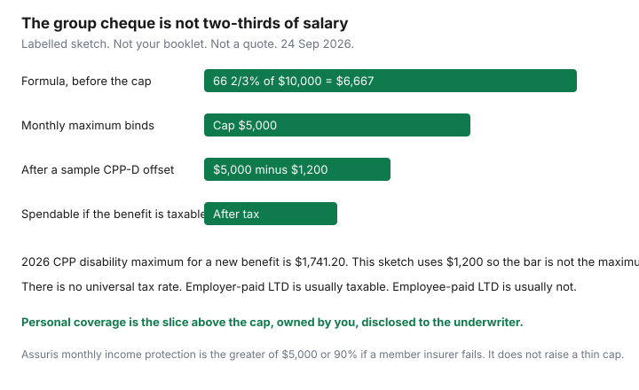

Insurance · Canada
Disability Insurance in Canada: Workplace LTD Gaps and When Personal Coverage Pays Off
A workplace long-term disability plan feels like income insurance until the first long illness. The cheque is a percentage of salary, then a cap, then a tax bill, then a reduction for Canada Pension Plan disability or workers’ compensation. Households meet that stack after the claim, when the mortgage is already due. This page is the read-the-booklet method for employees, plus the point at which a personal policy is doing real work. It is education. It is not a policy and not a promise that any insurer will issue coverage.
Definitions live in the group contract, which the employer owns. A federal public-service plan is one Canadian illustration of a two-year own-occupation test. It is not your booklet. Quebec Pension Plan disability, workers’ compensation, and auto accident benefits are Canadian offsets. They are not U.S. Social Security disability content pasted onto a Canadian pay stub.
Disclosure: This page is education. Personal disability policies are an offer type some households use as a top-up or as a primary plan. Saving Optimizer may earn a commission if partner links are added later. We do not currently claim a disability-insurer partnership, and we do not rank products. Figures below were read on 24 Sep 2026 and can change. Confirm the booklet and the government page before you rely on a dollar.
Key takeaways
- Write down short-term disability, the long-term elimination period, the benefit percentage, and the monthly maximum from the booklet before you assume two-thirds of salary.
- Many group plans pay on your own occupation for about 24 months, then switch to a broader “any occupation” or “commensurate occupation” test. The federal public-service plan is one worked example, not a national rule.
- CPP disability (2026 maximum $1,741.20 a month for a new benefit), QPP disability, workers’ compensation, and auto income-replacement benefits are typical offsets. Employer-paid plans usually pay a taxable benefit.
- A salary cap leaves high earners under-insured on the group plan alone. Personal coverage you own is what still exists after you resign.
- Assuris monthly-income protection at a member insurer is the greater of $5,000 a month or 90% if that insurer fails (page used 24 Sep 2026). It does not fill a thin group benefit.
Map STD vs LTD waiting periods and benefit % of income on your group booklet
Open the booklet, not the intranet tile that says “disability coverage included.” You need four fields, in days and dollars, for the job you actually have.
| Field | What to write | Why the household feels it |
|---|---|---|
| Sick leave or STD | Paid sick days, then any short-term plan: waiting period, weekly amount, and how many weeks it lasts. | STD is the bridge. If it ends at week 16 and LTD starts at week 17, week 17 with a missed form is an unpaid week. |
| LTD elimination period | The number of days you must be disabled before LTD pays. Common booklet figures are 90 or 119 days. Yours may differ. | The elimination period is unpaid by LTD. EI sickness benefits, if you qualify, are a separate federal program with their own maximum. Do not assume the group plan and EI add together. |
| Benefit percentage | The percent of pre-disability earnings, and whether “earnings” means base salary or includes bonus and overtime. | A 66⅔% or 60% formula on base salary ignores the bonus you spend. Copy the definition of earnings. |
| Monthly maximum | The dollar cap, and any step (for example a higher percent on the first slice of earnings). | The cap, not the percent, is the cheque once earnings are high. See the salary-cap section. |
Also copy who pays the premium. That single line drives the tax treatment later. Put the dates on the same sheet as the annual insurance review, because a job change rewrites all four fields.
Own-occupation vs any-occupation definitions after year two
“Own occupation” means the plan asks whether you can do your job. “Any occupation” asks whether you can do some other job you are reasonably suited for by education, training, or experience. Group booklets often use own occupation for a limited time, then switch.
The Treasury Board public-service Disability Insurance plan is a public Canadian illustration, not a template you can impose on a private employer. Its member booklet says benefits can be paid for up to 24 months if illness or injury prevents the regular occupation. After that 24-month period, benefits continue if the person cannot perform a commensurate occupation for which they are reasonably qualified. The plan document describes a commensurate occupation as one providing earnings of at least two-thirds of the current rate for the employee’s own occupation. Benefits are not payable beyond age 65 on that plan. Sun Life’s public FAQ for that plan describes the same 24-month own-occupation window, then an any-occupation test. If you are not in that plan, those sentences are an example of how a two-year switch reads. Your definition, your age cap, and your partial-disability rule are in your booklet.
Personal disability contracts are underwritten on you. Some keep an own-occupation definition for the whole benefit period. They cost more. “Own occupation” can still have teeth: a modified duty your employer offers, a requirement to participate in rehab, or a residual benefit that pays only the income you lost. Read those clauses. A personal policy that says “any occupation” from month one is a different product from one that says “own occupation to age 65.”
Do not plan a career change on the assumption the group plan will pay because you dislike the new job. The test is medical and contractual. The insurer can ask for treatment, for a return-to-work plan, and for proof you still meet the definition after month 24.
Offsets: CPP-D, QPP, WSIB/WCB, auto accident benefits, and taxable vs tax-free benefits
Group LTD is rarely a full paycheque stacked on top of every other benefit. The booklet lists offsets. The usual Canadian list:
- CPP disability (CPP-D). For a new benefit beginning in January 2026, Employment and Social Development Canada publishes a maximum of $1,741.20 a month ($610.46 flat plus up to $1,130.74 earnings-related). The average for new beneficiaries is lower. Your amount depends on contributions. Most group plans subtract CPP-D once it is approved, including a lump-sum retroactive payment. Apply when the booklet says to apply. A refusal to apply can let the insurer estimate the offset anyway.
- QPP disability. In Québec the parallel offset is the Quebec Pension Plan disability pension, administered by Retraite Québec. Use their current table. Do not paste the CPP maximum onto a Québec booklet.
- WSIB, WCB, CNESST, and the other workers’ compensation boards. A work injury is their claim first. LTD booklets offset amounts payable from the board. A workplace claim and an LTD claim at the same time need both files, not a guess about which one “wins.”
- Auto accident benefits. Where the injury is from a vehicle, provincial accident benefits can include an income-replacement amount. Ontario’s schedule, when that benefit is on the policy, describes 70% of gross income up to a weekly limit. Group LTD usually offsets it. Read the Ontario accident-benefits choices before you treat the auto policy as a second full salary.
- Other group plans and CPP retirement. A second employer plan, and sometimes early CPP retirement, can reduce the LTD cheque. The order is in the contract.
Tax is the other cut. The usual Canadian result — confirm it against the booklet and a tax preparer, because a mixed premium changes the fraction — is that the LTD benefit is taxable when the employer pays the premium, and not taxable when the employee pays the premium with after-tax dollars. A plan paid half and half is generally taxable in proportion. EI sickness is not a substitute for this rule. People spend the gross deposit and meet the tax bill in April.

| Step | Labelled amount | What it stands for |
|---|---|---|
| Formula before the cap | 66⅔% × $10,000 = $6,667 | A common-looking percent. Your booklet may say 60% or a stepped formula, and it may ignore bonus. |
| Monthly maximum | $5,000 | The cap binds. The percent never reaches the pay stub. |
| CPP-D offset, if approved | Subtract the actual CPP-D, up to the 2026 maximum of $1,741.20 | Primary plans are designed this way. A $1,200 CPP-D award would leave $3,800 of the $5,000 in this sketch. |
| Tax, if the employer pays the premium | Withholding on the taxable benefit | There is no universal 30% rate. The point is that $5,000 taxable is not $5,000 to spend. |
Assuris protects a monthly income benefit at a member life and health insurer for the greater of $5,000 a month or 90% if that company fails. Group disability has an extra limit: if you are not already receiving payments, Assuris says coverage continues until the earlier of the next group renewal or six months from the failure. That is failure protection. It is not a reason to skip the cap and the offset.
Salary caps on group LTD—high earners often need a personal top-up
The percentage in the brochure and the maximum in the contract are different sentences. Once monthly earnings times the percent exceed the maximum, every extra dollar of salary is uninsured on that plan.
Use your numbers. Take the monthly maximum. Divide by the benefit percent. That quotient is the earnings level where the cap starts. If the maximum is $5,000 and the percent is 66⅔, the cap bites around $7,500 a month of insured earnings ($5,000 ÷ 0.6667). Someone earning $12,500 a month is not “two-thirds insured.” They are insured for $5,000 before offsets and tax. Bonus, commission, and overtime count only if the definition of earnings includes them, and only up to that same cap.
A personal top-up is a policy sized to the slice the group plan does not cover, issued to you, with the group plan disclosed on the application. Underwriters ask about the group benefit. Hiding it can void a claim or reduce the personal benefit to avoid over-insurance. Some personal contracts are written as residual top-ups that pay the difference. Some pay a stated amount and then coordinate. You want the coordination rule in writing before you pay the first premium.
Insurers also cap the total of all disability benefits at a share of earnings, often in the range households describe as roughly 85% of after-tax income. There is no statute that sets that ratio for every personal policy. Ask what total percentage they will issue on top of the group plan. A quote that ignores the group booklet is not a top-up. It is a second plan that may shrink at claim time.
Portability: coverage that vanishes when you leave the job
Group LTD is a benefit of the job. When the job ends, the coverage ends on the date the booklet states — often the last day of employment, sometimes the end of the month, sometimes through a statutory notice period if benefits are continued. Read that sentence before you resign.
- You do not take the group rate with you. A conversion privilege, if the booklet has one, is a short window to buy an individual policy, often with limited medical evidence and often at a price that shocks people who were used to a payroll deduction. The window is a number of days in the contract. Do not assume 31 days because another employer used 31.
- A claim in progress is not the same as portable coverage. If you are already disabled and approved, leaving may not stop that claim. If you are healthy and you leave, there is no claim to take. The next employer’s plan may impose a waiting period for new hires and a pre-existing condition limitation.
- Severance that continues benefits continues them only as long as the agreement says, and only for the coverages named. Ask human resources to mark LTD yes or no on the severance letter.
Personal disability insurance that is in force stays in force because you own it, subject to the contract: non-cancellable, guaranteed renewable, or cancellable are different promises about future premiums and the insurer’s right to walk away. Match the benefit period to the years you still need employment income, often to age 65, and match the waiting period to cash you can actually live on. That policy is the one that does not vanish on a Friday resignation.
Self-employed and contractors: personal DI as the primary plan
Self-employed people and many contractors have no group booklet. Employment Insurance special benefits for self-employed workers exist only if you opted in and met the waiting rules. They are not LTD. A personal disability policy is the primary plan, not a top-up.
- Waiting period. 30, 60, 90, or 120 days are common choices. A longer wait costs less and requires a larger emergency fund. If invoices stop the week you stop working, a 120-day wait is a four-month cash plan, not a discount to brag about.
- Earnings proof. Underwriters use tax returns and, for newer businesses, a lower agreed amount. A year with a large RRSP deduction or a loss can shrink the benefit they will issue. Apply while the returns show the income you are trying to protect.
- Definition. Own-occupation matters more when your work is specific (a surgeon, a programmer, a translator). A residual or partial benefit matters when income falls without a total stop. Read both.
- Incorporation. A policy owned by the person, with premiums paid personally, is the usual way to aim for a tax-free benefit. A corporation-paid premium can change the tax result. That is a question for the person who files the T2, not for a quote screen.
- Contractors on a client’s site. Ask whether the client’s workers’ compensation covers you. If it does not, a work injury is your personal policy plus any private coverage you bought. Do not assume the client’s LTD includes you.
Quote flows for personal disability coverage are an offer type. Compare the definition, the waiting period, the benefit period, the residual wording, and the coordination with any future group plan. A cheaper premium that switches to “any occupation” at month 24 is a different promise. If a group plan appears later, tell the insurer. You may be able to reduce the personal benefit and the premium instead of paying twice for the same slice of income.
Sources & date stamps
- Employment and Social Development Canada, CPP disability benefit amount — 2026 maximum $1,741.20 a month for a new benefit; flat rate $610.46. Used 24 Sep 2026.
- ESDC, CPP and OAS quarterly figures, April to June 2026 — disability pension maximum $1,741.20 for benefits beginning January 2026. Used 24 Sep 2026.
- Treasury Board Secretariat, public-service Disability Insurance member booklet — own occupation up to 24 months, then a commensurate occupation at 66⅔% of the current rate, not past age 65. Illustration of one plan, not a national rule. Used 24 Sep 2026.
- Assuris, how am I protected and group disability income — greater of $5,000 a month or 90%; group continuation until the next renewal or six months if not in payment. Used 24 Sep 2026.
- Ontario accident-benefits dollar choices are on the FSRA consumer page cited in the Ontario guide. Offsets in a group booklet are contractual. Used 24 Sep 2026.
Frequently asked questions
Is group LTD the same as two-thirds of my salary?
Only if the booklet says so and your earnings sit under the monthly maximum. Caps, excluded bonus, CPP or QPP disability offsets, workers’ compensation, auto benefits, and tax when the employer pays the premium all reduce what you can spend.
What does own occupation mean after two years?
Many group plans pay if you cannot do your own job for about 24 months, then test whether you can do another suitable job. The federal public-service plan uses a commensurate-occupation test after 24 months, with earnings of at least two-thirds of your own occupation’s current rate. Your booklet controls.
Are LTD benefits taxable in Canada?
Usually yes when the employer pays the premium, and usually no when you pay it with after-tax dollars. A shared premium is generally taxable in proportion. Confirm the booklet and your tax filing. This page is not tax advice.
Does Assuris replace a small group benefit?
No. At a member insurer, monthly income protection is the greater of $5,000 a month or 90% if the insurer fails. Group coverage that is not yet in payment continues only until the next renewal or six months, whichever is earlier. Size the benefit for the household first.
Is this insurance advice?
No. Education only. Personal disability policies are an offer type. We do not claim a partnership with any insurer.